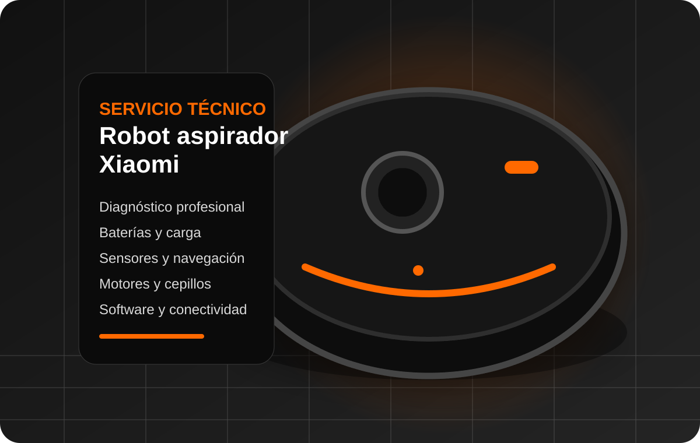
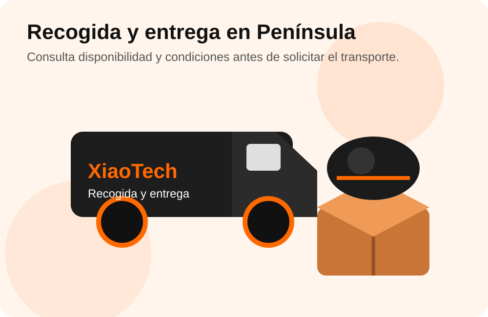

Servicio especializado
Revisión técnica de robots, relojes y portátiles Xiaomi.
Diagnóstico y reparación especializada de equipos Xiaomi en nuestro taller de Madrid, con presupuesto previo, garantía en la reparación y servicio de recogida disponible para Península.
No somos servicio técnico oficial Xiaomi. No vemos equipos en garantía del fabricante.
Revisión técnica de robots, relojes y portátiles Xiaomi.
Te informamos del coste antes de realizar la reparación.
Garantía sobre la intervención realizada según condiciones.
Solicita online la recogida de tu equipo en Península.
Accede directamente a la página de servicio correspondiente a tu dispositivo para conocer las averías que revisamos y el proceso de reparación.
Problemas de carga, batería, sensores, navegación, motores, ruedas, cepillos, Wi‑Fi, mapas, depósitos y bases de carga o autovaciado.
Ver servicio de robots aspiradores →Revisión de pantalla, batería, carga, botones, sensores, conectividad Bluetooth o Wi‑Fi, firmware, micrófono y altavoz.
Ver servicio de Smartwatch →Diagnóstico de equipos que no encienden, fallos de pantalla, batería, carga, teclado, almacenamiento, sistema operativo, placa y rendimiento.
Ver servicio de portátiles →
Trabajamos sobre fallos electrónicos, mecánicos y de software en los tres grupos de productos. La intervención se realiza tras revisar el equipo y comunicar el presupuesto.

Puedes solicitar la recogida de tu dispositivo para enviarlo a nuestras instalaciones. El servicio está disponible para Península.
Usa el enlace seguro de recogida para iniciar el servicio.
Un proceso sencillo para saber en todo momento qué ocurre con tu equipo.
Cuéntanos qué dispositivo Xiaomi tienes y cuál es el problema.
Recibimos el equipo en taller o mediante el servicio de recogida.
Te comunicamos el coste de la intervención antes de reparar.
Tras tu aceptación realizamos la reparación, pruebas y entrega.
C. de Joaquín María López, 26, 28015 Madrid. Metro Islas Filipinas, Canal y Moncloa. Aparcamiento público en Calle Blasco de Garay 61.
Completa el formulario y se enviará directamente a soporte@kelatos.com, sin abrir tu aplicación de correo.
Reparamos robots aspiradores Xiaomi, relojes Smartwatch Xiaomi y ordenadores portátiles Xiaomi.
Sí. Dispones de un botón de solicitud de recogida online. El servicio está dirigido a Península y se aplican las condiciones indicadas en el proceso de contratación.
Sí. Los canales de WhatsApp +34 649 97 01 28 y atención telefónica 914 46 85 03 están indicados como atención 24 horas, 365 días.
No. XiaoTech es un servicio técnico independiente. No gestionamos reparaciones cubiertas por la garantía oficial del fabricante.
XiaoTech ofrece reparación de robot aspiradores Xiaomi, reparación de relojes Smartwatch Xiaomi y reparación de ordenadores portátiles Xiaomi en Madrid. Atendemos clientes de Chamberí y zonas cercanas como Moncloa, Tetuán, Salamanca, Chamartín, Argüelles y otros distritos de Madrid, además de disponer de servicio de recogida para Península.